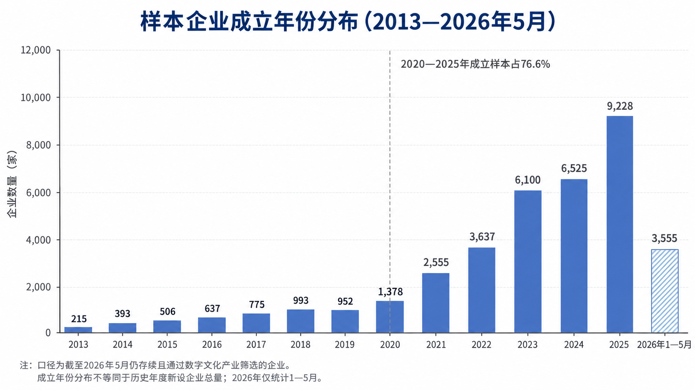
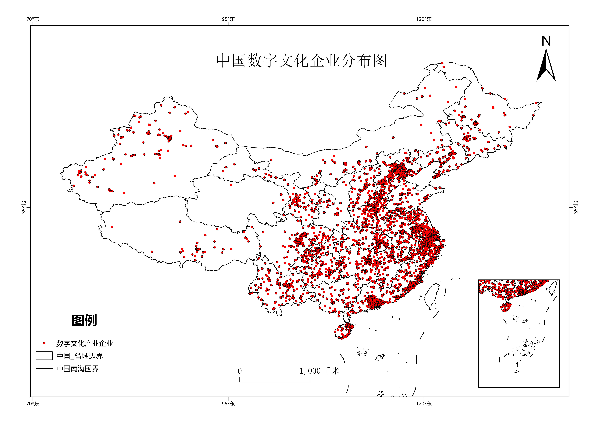
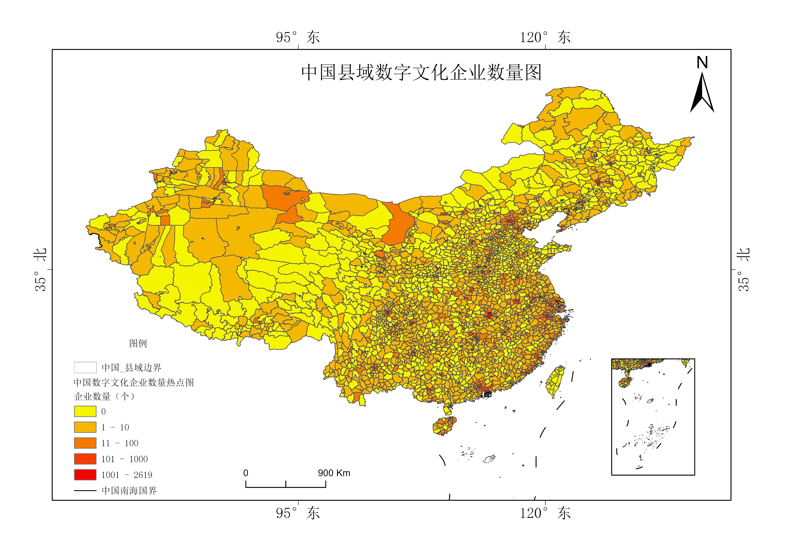
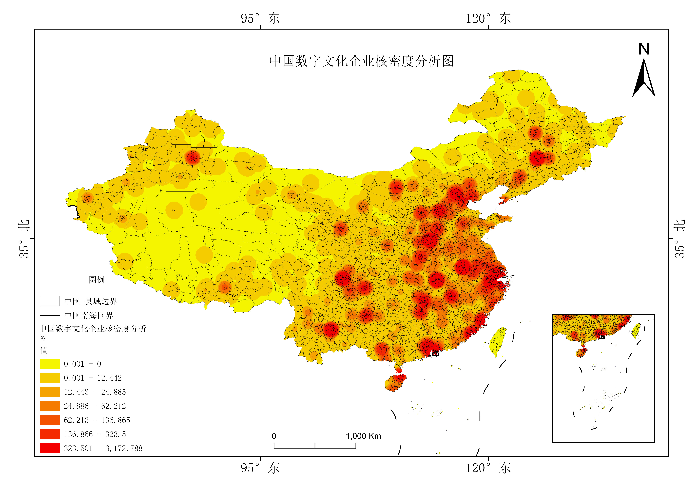
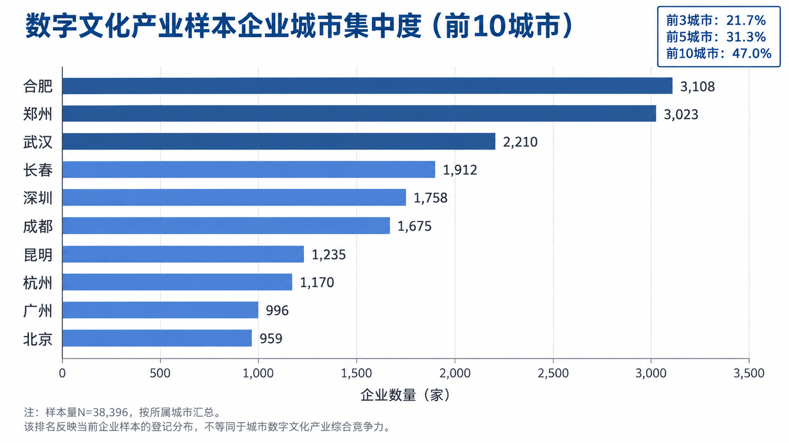
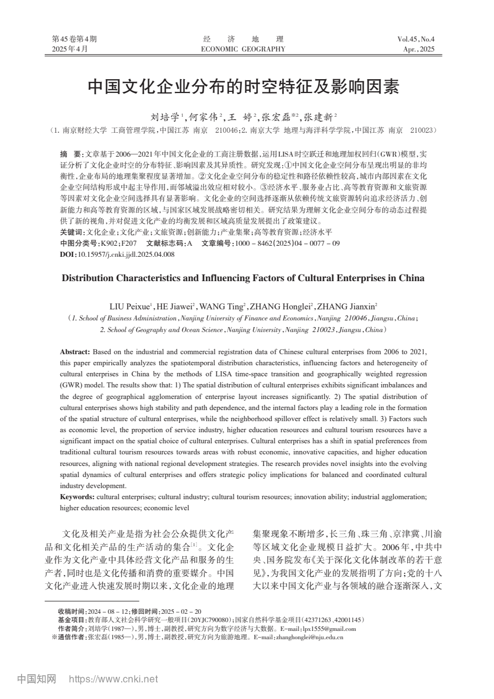

中国数字文化产业空间集聚研究进展
企业数据构建、空间格局识别与改进实验方案
汇报框架
围绕研究问题组织证据，先审查数据可信度，再讨论空间格局和下一步实验
梳理文献进展
建立分析框架
审查数据质量
识别样本结构
核密度格局
城市集中度
补充多尺度动态
增强机制识别
研究对象、边界与核心问题
国家产业分类、文化产业分类与数字经济分类的交叉筛选结果
企业在哪里
全国覆盖范围、区域差异和城市集中度如何？
如何形成热点
县域高值、连续密度热点和多中心结构是否一致？
格局怎样变化
新设企业流量与在营企业存量如何演进？
哪些因素驱动
经济、人才、创新、数字基础设施与政策如何作用？
文献进展：研究共识与待解问题
项目文献库共梳理75篇文献，其中近年研究55篇、方法类文献20篇
| 研究主题 | 已有共识 | 常用方法 | 当前不足 |
|---|---|---|---|
| 概念与边界 | 数字技术改变文化生产、传播和消费 | 政策文本、产业分类、关键词筛选 | 行业口径不统一，“数字性”识别不足 |
| 空间格局 | 东部和核心城市集中，区域差异明显 | KDE、区位商、Moran’s I、热点分析 | 全国微观企业证据有限，尺度依赖突出 |
| 动态演化 | 集聚具有路径依赖，多中心联系增强 | 重心迁移、LISA路径、空间马尔可夫 | 历史存量重建困难，时间节点较少 |
| 影响机制 | 经济、人才、创新和产业结构较重要 | 空间计量、地理探测器、GWR/MGWR | 虚拟空间数据缺失，因果识别偏弱 |
理论与分析框架：集聚、演化与机制
理论用于提出可检验问题，方法按证据强度逐步推进
对象界定
产业分类交叉筛选
经营范围辅助核验
建立可重复口径
空间描述
点位分布
重心与标准差椭圆
县域数量与区位商
集聚识别
核密度与热点分析
Global/Local Moran’s I
DBSCAN多中心识别
动态演化
新设流量与在营存量
LISA时间路径
空间马尔可夫转移
机制检验
计数型空间模型
MGWR/GTWR
政策效应与稳健性
规模经济、知识溢出和共享劳动力市场解释城市集中。
历史基础、相关多样化和路径依赖解释格局持续性。
平台、网络基础设施与线上联系可能改变传统邻近机制。
数据构建：来源、筛选与当前样本
筛选依据：GB/T 4754—2017、《文化及相关产业分类（2018）》与《数字经济及其核心产业统计分类（2021）》
包含工商、行业、地址与经营范围信息
经营范围用于补充数字文化属性
统一社会信用代码无重复
保留WGS84与CGCS2000字段
数据质量审计：进入模型前的五项校验
| 问题 | 当前证据 | 可能影响与处理方式 |
|---|---|---|
| 版本不一致 | 筛选报告写38,994家，当前Excel为38,396家，相差598家 | 冻结数据版本，保存筛选规则、日期和逐步样本量 |
| 地图不一致 | 县域图最高值2,619，当前表最高区县计数为2,760 | 使用同一数据版本重制专题图，并核对区县名称归并 |
| 时间口径 | 全部为当前存续企业，2026年只统计1—5月 | 区分新设流量与历史在营存量，补充注销和迁移信息 |
| 地址偏差 | 部分高新区、开发区登记数量异常突出 | 核验注册地址与经营地址，设置开发区敏感性样本 |
| 坐标与距离 | CGCS2000字段表现为经纬度数值，并非米制坐标 | KDE、距离与面积计算前转换为适合全国分析的米制投影 |
当前存续样本集中于2020年后成立企业

行业构成与企业规模
行业结构用于检验筛选结果，规模结构受缺失值影响，仅作描述
国标行业门类
企业规模字段
企业点位总体分布：东中部密集，西部稀疏

县域数量分异：头部区县与开发区集中

核密度格局：多中心热点与区域核心并存

前10城市集聚47.0%的样本企业

阶段性发现：文献共识与样本异常并存
当前结果适合作为研究假设的证据，尚不足以支持城市竞争力或因果结论
与文献一致
- 全国空间分布明显不均衡
- 东部及中部城市群点位更密集
- 省会和区域中心形成热点
- 连续热点呈多中心结构
值得复核的偏离
- 合肥、郑州、武汉、长春排名靠前
- 北京、上海的样本量低于部分省会
- 部分高新区在县域榜单中异常突出
- 当前格局与传统“北上广深”叙事不同
待检验解释
- 数字文化与广义文化企业对象不同
- 分层筛选对信息技术行业覆盖较宽
- 注册地址及园区政策产生登记集聚
- 数据版本和存续样本造成结构偏差
参考论文：可迁移的时空分析设计

主要空间发现
整体呈东南密、西北疏。高—高集聚主要位于京津冀、长三角和珠三角，部分省会表现为高—低类型。
动态与驱动
空间稳定性St=0.895，路径依赖明显。经济、产业结构、高校、文旅资源和创新呈空间异质效应。
可继承内容
企业微观数据验证、局部空间动态、权重矩阵设定和局部系数解释框架。
需要推进
研究对象转向数字文化企业，并改进多尺度、计数型因变量、时间连续性和内生性处理。
改进实验Ⅰ：多尺度时空格局与集聚演化
流量与存量
逐年新设企业作为流量
补充注销、迁移与状态记录后重建在营存量
米制投影
保留原始经纬度
全国距离和面积分析采用适配CGCS2000的米制投影
方向与差异
重心、标准差椭圆
区位商、Dagum基尼与分布动态
连续与局部
KDE、热点分析
Global/Local Moran’s I与DBSCAN
路径与转移
LISA时间路径
时空跃迁与空间马尔可夫转移